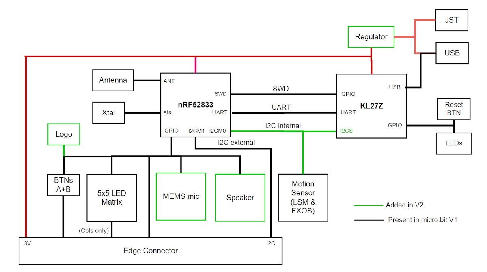
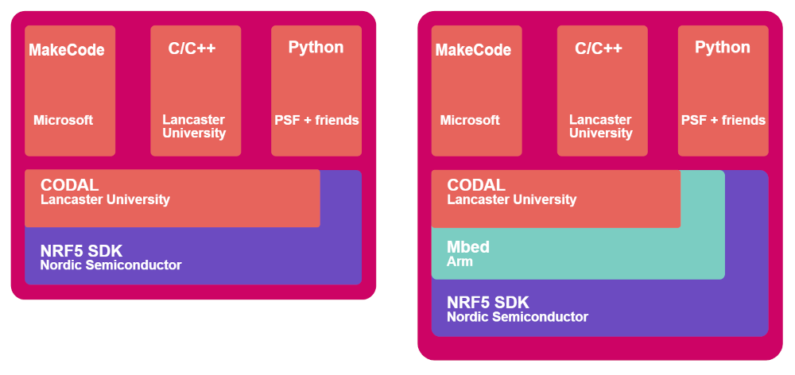

การเขียนโปรแกรม C/C++ ด้วย CODAL สำหรับบอร์ด Micro:bit V2#
Keywords: BBC Micro:bit, CODAL v2, VS Code IDE, On-Chip Debugging
▷ บอร์ดไมโครบิตและการเขียนโปรแกรมภาษา C/C++#
บอร์ดไมโครคอนโทรลเลอร์ที่ได้เลือกใช้ในบทความนี้ เป็นบอร์ด Micro:bit v2 (เปิดตัวในเดือนตุลาคม ค.ศ. 2020) เนื่องจากเป็นบอร์ดเวอร์ชันใหม่กว่ารุ่นแรก และมีชิป nRF52833 (Arm Cortex-M4F, 64 MHz, 512kB Flash, 128kB SRAM) เป็นตัวประมวลผลหลัก (Application Processor หรือ Target MCU) ซึ่งมีความเร็วในการประมวลผลและมีหน่วยความจำภายในชิปมากกว่าชิป nRF51822 (Arm Cortex-M0, 16 MHz, 256kB Flash 16kB SRAM) ของบอร์ด Micro:bit v1
บทความที่เกี่ยวข้อง: "แนะนำบอร์ดไมโครคอนโทรลเลอร์ BBC Micro:bit"
รูป: บอร์ดไมโครบิต เวอร์ชัน 2
เนื่องจากบอร์ดไมโครบิต เวอร์ชัน 2 มีชิป KL27Z ที่ทำหน้าที่เป็น Interface MCU (ซึ่งจะต้องมีการติดตั้งเฟิร์มแวร์มาให้แล้ว และมีเฟิร์มแวร์อยู่หลายเวอร์ชัน สามารถอัปเกรดเป็นเวอร์ชันใหม่ได้: Micro:bit Firmware) จากรูปจะเห็นได้ว่า KL27Z ทำหน้าที่เชื่อมต่อกับไมโครคอนโทรลเลอร์ nRF52833 กับคอมพิวเตอร์ของผู้ใช้ ผ่านทางพอร์ต USB (MicroUSB Connector)
ขา Tx/Rx ของชิป nRF582833 ซึ่งใช้สำหรับรับส่งข้อมูลแบบ Serial มีการเชื่อมต่อกับขาของชิป KL27Z ดังนั้นจึงเลือกได้ว่า จะให้รับส่งข้อมูลอีกต่อหนึ่งไปยังคอมพิวเตอร์ของผู้ใช้ได้ นอกจากนั้นแล้วยังมี SWD Interface ซึ่งจะใช้สำหรับการอัปโหลดไฟล์เฟิร์มแวร์จากคอมพิวเตอร์ของผู้ใช้ไปยังชิป nRF52833
KL27Z Firmware รองรับการทำงานตามรูปแบบของ Arm CMSIS DAPLink ดังนั้นจึงสามารถนำมาใช้ในการดีบักโปรแกรม หลังจากอัปโหลดไฟล์เฟิร์มแวร์ไปยังบอร์ดไมโครบิตได้ ขั้นตอนนี้ เรียกว่า "Source-Level On-Chip Debugger"
ข้อสังเกต: ถ้าเป็นบอร์ดรุ่นใหม่ เช่น v2.20 (เปิดตัวในเดือนเมษายน ค.ศ. 2022) จะใช้ชิปอื่น กล่าวคือ ใช้ nRF52820 แทน KL27Z เนื่องจากปัญหาชิปขาดตลาด

รูป: บล็อกไดอะแกรมของบอร์ดไมโครบิต เวอร์ชัน v2.0 (Source: https://tech.microbit.org/hardware/)
รูป: DAPLink Interface for Micro:bit v2
▷ ตัวเลือกสำหรับการเขียนโปรแกรม C/C++#
การเขียนโค้ดด้วยภาษา C/C++ สำหรับบอร์ดไมโครบิต มีมากกว่าหนึ่งตัวเลือกดังต่อไปนี้ แต่ในบทความนี้จะเลือกใช้และทดลองวิธีที่ 2 เท่านั้น
- ใช้ซอฟต์แวร์ VS Code IDE + nRF Connect SDK for VS Code ของบริษัท Nordic ผู้ผลิตชิป nRF52833 หรือใช้ nRF MDK (Microcontroller development kit) ร่วมกับ IDE อย่างเช่น SEGGER Embedded Studio (SES)
- ใช้ซอฟต์แวร์ CODAL v2 ที่ได้มีการพัฒนาโดยนักวิจัยของมหาวิทยาลัย Lancaster University ในประเทศอังกฤษ สำหรับบอร์ดไมโครบิต (เวอร์ชันสอง) โดยเฉพาะ และเขียนโปรแกรมด้วยภาษา C/C++ โดยใช้ API ดังกล่าวได้ง่ายขึ้น
- ใช้ซอฟต์แวร์ Arduino IDE และติดตั้ง Arduino Core for nRF52 และเขียนโปรแกรมด้วย Arduino Sketch
CODAL (Component-Oriented Device Abstraction Layer) ถือว่าเป็นซอฟต์แวร์ที่สำคัญสำหรับบอร์ดไมโครบิต
- ใช้ภาษา C/C++ ในการพัฒนา
- มีการใช้งานมาตั้งแต่บอร์ดไมโครบิตรุ่นแรก แต่ใช้ชื่อว่า DAL (Device Abstraction Layer)
- ทำหน้าที่เป็น C++ Runtime Environment สำหรับบอร์ดไมโครบิต
- รองรับการทำงานแบบมัลติเธรดได้ (เรียกว่า "Fiber")

รูป: เปรียบเทียบความแตกต่างระหว่าง DAL/CODAL สำหรับบอร์ดไมโครบิต v1 และ v2 (Source: https://tech.microbit.org/software/runtime/)
ข้อสังเกต:
- DAL สำหรับ Micro:bit v1 ต้องอาศัย Arm Mbed OS 2.0 (classic) และเครื่องมืออย่างเช่น Yotta Build Tool
- CODAL (v2) ไม่ได้ใช้ Mbed OS อีกต่อไป และมีการใช้ CMake Build Tool และ Ninja Build Tool สำหรับขั้นตอนการคอมไพล์โค้ดโดยใช้ GCC Arm Toolchain
- CODAL ไม่ได้มีเฉพาะบอร์ดไมโครบิต แต่มีการนำไปใช้กับบอร์ดไมโครคอนโทรลเลอร์อื่น เช่น CODAL for RP2040 / Pico
รายละเอียดเพิ่มเติม สามารถศึกษาได้จากเอกสารเผยแพร่ที่ได้มีการเผยแพร่ไว้ต่อไปนี้
- J. Devine, J. Finney, P. de Halleux, M. Moskal, T.Ball, and S. Hodges. "MakeCode and CODAL: Intuitive and Efficient Embedded Systems Programming for Education", Journal of Systems Architecture Volume 98, September 2019, Pages 468-483.
รูป: แผนผังแสดงองค์ประกอบที่สำคัญของซอฟต์แวร์ MakeCode / CODAL
โครงการ MakeCode เริ่มต้นเมื่อปีค.ศ. 2016 โดยบริษัทไมโครซอฟต์ และได้พัฒนาซอฟต์แวร์ Microsoft MakeCode Editor ซึ่งเป็น Web App ที่ได้เลือกใช้ Google Blockly และ Monaco Editor เป็นพื้นฐานในการพัฒนา
แอปพลิเคชันนี้ทำงานบนหน้าเว็บเบราว์เซอร์ และใช้ในการเขียนโค้ดและสามารถจำลองการทำงานของโค้ดได้ นอกจากนั้นแล้วยังทำหน้าที่แปลงบล็อกคำสั่งที่ได้จากการเขียนโค้ด ให้เป็นคำสั่งต่าง ๆ ในภาษา Static TypeScript (STS)
โค้ด STS จะถูกแปลงหรือคอมไพล์อีกขึ้นตอนหนึ่ง โดยใช้ Static TypeScript Compiler ให้เป็นไฟล์โปรแกรมที่ทำคำสั่งในระดับล่าง (Machine Code) ของชิปไมโครคอนโทรลเลอร์เป้าหมาย มีการใช้คำสั่งต่าง ๆ จาก CODAL Runtime Library และจะต้องนำร่วมเป็นไฟล์เดียวกัน (การสร้างไฟล์เฟิร์มแวร์) ซึ่งเป็นหน้าที่ของ Linker
โค้ด C/C++ ของ CODAL ได้ถูกคอมไพล์ไว้แล้ว (Pre-compiled) และเก็บไว้เป็นไฟล์ไบนารี (เรียกว่า Runtime Binary File) และถูกนำไปใช้โดย Linker ในขั้นตอนการสร้างไฟล์เฟิร์มแวร์
ในขั้นตอนสุดท้าย การเขียนโค้ดด้วยการต่อบล็อกหรือใช้ภาษา STS ก็ตาม จะถูกแปลงให้เป็นโปรแกรมอยู่ในรูปไฟล์ไบนารีที่เรียกว่า .UF2 ซึ่งสามารถนำอัปโหลดไปยังบอร์ดไมโครบิต หากมีการเชื่อมต่อบอร์ดดังกล่าวกับพอร์ต USB ของเครื่องผู้ใช้
การใช้งาน MakeCode ผู้ใช้จะไม่ต้องใช้ CODAL v2 โดยตรง แต่ถ้าจะเขียนโค้ดด้วยภาษา C/C++ ก็สามารถเรียนรู้การใช้งาน CODAL v2 API ได้ ซึ่งทำหน้าที่เป็น HAL (Hardware Abstraction Layer) สำหรับบอร์ดไมโครบิตโดยเฉพาะ
▷ ซอฟต์แวร์สำหรับการเขียนโค้ดด้วย CODAL v2#
สำหรับผู้ใช้ Ubuntu: แนะนำให้ติดตั้งโปรแกรมที่จำเป็นต้องใช้ก่อน (ลองใช้ Ubuntu 22.04 LTS)
$ sudo apt install python3 python3-pip python3-dev python3-venv
$ sudo apt install git build-essential ninja-build cmake
$ sudo apt install gcc-arm-none-eabi binutils-arm-none-eabi
ลองทำคำสั่งเพื่อตรวจสอบเวอร์ชันของโปรแกรม ตามตัวอย่างดังนี้
$ python -V
Python 3.10.6
$ git --version
git version 2.34.1
$ cmake --version
cmake version 3.22.1
$ ninja --version
1.10.1
$ arm-none-eabi-gcc --version
arm-none-eabi-gcc (xPack GNU Arm Embedded GCC x86_64) 10.3.1 20210824 (release)
สำหรับผู้ใช้ Windows: แนะนำให้ติดตั้งเพื่อใช้งานโปรแกรมต่อไปนี้
ใน Github ของ The xPack Project มีไฟล์ไบนารีสำหรับโปรแกรมที่เกี่ยวข้อง ให้นำมาติดตั้งใช้งานในเครื่องคอมพิวเตอร์ของผู้ใช้ Windows แนะนำให้ติดตั้งใช้งานโปรแกรมต่อไปนี้
- The xPack GNU Arm Embedded GCC
https://github.com/xpack-dev-tools/arm-none-eabi-gcc-xpack/releases - The xPack CMake
https://github.com/xpack-dev-tools/cmake-xpack/releases - The xPack Ninja-Build
https://github.com/xpack-dev-tools/ninja-build-xpack/releases - The xPack OpenOCD
https://github.com/xpack-dev-tools/openocd-xpack/releases - The xPack windows-build-tools (for Windows)
https://github.com/xpack-dev-tools/windows-build-tools-xpack/releases
สำหรับผู้ใช้ Windows เมื่อได้ดาวน์โหลดไฟล์ .zip มาแล้วให้แตกไฟล์ในไดเรกทอรีที่ต้องการ
จากนั้นให้ตั้งค่าสำหรับตัวแปร PATH ในส่วนที่เป็น Control Panel > Edit the environment variables
เพื่อให้สามารถเรียกใช้โปรแกรมแบบ CLI (Commmand Line Interface) ซึ่งไฟล์ไบนารีของแต่ละโปรแกรมจะอยู่ภายใต้ไดเรกทอรีย่อยชื่อ bin
ลองตรวจสอบการเรียกใช้โปรแกรมใน Windows Command Prompt ตามตัวอย่างดังนี้
> python -V
Python 3.10.10
> git --version
git version 2.33.1.windows.1
> cmake --version
cmake version 3.23.5
> ninja --version
1.11.1
> make --version
GNU Make 4.4
Built for x86_64-w64-mingw32
> arm-none-eabi-gcc.exe --version
arm-none-eabi-gcc.exe (xPack GNU Arm Embedded GCC, 64-bit) 10.2.1 ...
▷ โค้ดตัวอย่างเพื่อสาธิตการใช้งาน CODAL v2#
ดาวน์โหลดซอร์สโค้ดตัวอย่างจาก Github ที่สาธิตการเขียนโค้ดโดยใช้ CODAL v2 สำหรับบอร์ดไมโครบิต
$ git clone https://github.com/lancaster-university/microbit-v2-samples.git
ลองดูไดเรกทอรีและไฟล์ภายใต้ microbit-v2-samples โดยทำคำสั่ง tree (ทำคำสั่งใน Ubuntu Terminal)
$ tree -L 2 ./microbit-v2-samples/
microbit-v2-samples/
├── AUTHORS
├── build.py
├── CMakeLists.txt
├── codal.ble.json
├── codal.json
├── Dockerfile
├── LICENSE
├── module.json
├── README.md
├── source
│ ├── main.cpp
│ └── samples
└── utils
├── cmake
├── debug
├── esptool.py
├── generate_libraries.py
├── __init__.py
├── merge_hex.py
├── python
├── targets.json
└── uf2conv.py
6 directories, 16 files
จากข้อความเอาต์พุตเมื่อได้ทำคำสั่ง tree จะเห็นได้ว่า มีไฟล์ source\main.cpp
ดังนั้นถ้าจะลองเขียนหรือแก้ไขโค้ดตัวอย่าง ก็ให้ใช้ไฟล์ดังกล่าว และถ้าลองดูในไดเรกทอรี
source/samples/
จะพบว่ามีไฟล์ .cpp ที่เป็นโค้ดตัวอย่างอีกหลายไฟล์ สำหรับทดสอบหรือสาธิจการทำงานของฮาร์ดแวร์ต่าง ๆ ของบอร์ดไมโครบิต
ทำคำสั่งเพื่อดาวน์โหลดไฟล์ซอร์สโค้ดที่เกี่ยวข้อง และคอมไพล์โค้ดในโปรเจกต์ตัวอย่างตามลำดับ
$ cd microbit-v2-samples/
$ python build.py
เมื่อทำคำสั่ง จะมีการดาวน์โหลดไฟล์หรือไลบรารีที่เป็น Dependencies จาก Github repos เช่น
lancaster-university/codal-microbit-v2lancaster-university/codal-corelancaster-university/codal-nrf52NordicSemiconductor/nrfxmicrobit-foundation/codal-microbit-nrf5sdk
เมื่อคอมไพล์ได้สำเร็จแล้ว จะได้ไฟล์ที่มีชื่อว่า MICROBIT.hex ซึ่งสามารถนำไปใส่ลงใน USB Drive ของบอร์ดไมโครบิตได้
รูป: ตัวอย่างการทำคำสั่งในขั้นตอน Build สำหรับผู้ใช้ Windows
▷ การใช้งาน VS Code IDE เพื่อเขียนโค้ดและดีบัก#
ถ้าจะเขียนโค้ดโดยใช้ VS Code IDE ให้ติดตั้งโปรแกรม VS Code IDE และ VS Code Extensions ต่อไปนี้ก่อนทำขั้นตอนถัดไป
- C/C++ Extension Pack (
ms-vscode.cpptools) - CMake Tools (
ms-vscode.cmake-tools) - Cortex-Debug (
marus25.cortex-debug)
ลองเปิดไฟล์ source\main.cpp แล้วแก้ไขตามโค้ดตัวอย่างนี้ ทำขั้นตอน Build
และนำไฟล์ MICROBIT.hex ไปทดลองกับบอร์ดไมโครบิต
โค้ดตัวอย่างนี้ จะแสดงผลบนแผง LED Matrix ขนาด 5x5 ให้เป็นรูปสัญลักษณ์ Smile Face (หน้ายิ้ม)
และตามด้วยข้อความ "Hello World" ที่จะมีการเลื่อนข้อความไปทางซ้าย
#include "MicroBit.h"
MicroBit uBit; // Create an instance of the uBit class
const char * const SMILE_FACE_STRING ="\
000,255,000,255,000\n\
000,000,000,000,000\n\
255,000,000,000,255\n\
000,255,255,255,000\n\
000,000,000,000,000\n";
int main() {
// Create a Microbit image from a string
MicroBitImage smile(SMILE_FACE_STRING);
// Initialize the Microbit CODAL runtime
uBit.init();
while(1) {
// Show a smile-face image
uBit.display.print(smile);
// Delay for 1000 msec
uBit.sleep(1000);
// Clear the 5x5 LED-matrix screen
uBit.display.clear();
// Show a message and schroll it on the screen
uBit.display.scroll("Hello World!");
}
}
เปิดไดเรอรี (Folder) ใน VS Code IDE (ทดลองใช้เวอร์ชัน Windows)
รูป: ตัวอย่างการใช้งาน VS Code IDE เพื่อเขียนโค้ดและคอมไพล์โค้ด
ในกรณีที่ต้องการตั้งค่าสำหรับ IntelliSense Configurations ใน VS Code IDE
ให้กด Ctrl+Shift+P เลือก C/C++: Edit Configuration (UI)
และตั้งค่า เช่น การเลือกใช้คอมไพเลอร์ (Compiler Path Setting)
เลือกมาตรฐานที่ใช้ในการคอมไพล์โค้ด เช่น "c17" และ "gnu++14" สำหรับ C / C++
ตามลำดับ แล้วบันทึกการตั้งค่าลงในไฟล์
.vscode\c_cpp_properties.json ภายในไดเรกทอรีของโปรเจกต์
รูป: การตั้งค่าสำหรับ IntelliSense Configurations (c_cpp_properties.json)
เมื่อเข้าสู่โหมดดีบัก ผู้ใช้สามารถเลือกและกำหนดตำแหน่งในโค้ด main.cpp เพื่อใช้เป็นตำแหน่งหยุดชั่วคราว
หรือ Breakpoints และสามารถสั่งให้ไมโครคอนโทรลเลอร์ทำงานจนมาหยุดที่ตำแหน่งดังกล่าวได้
หรือจะสั่งไปทำไปทีละคำสั่งในโค้ดได้ เป็นต้น
รูป: ตัวอย่างการกำหนดตำแหน่ง Breakpoints และทำขั้นตอนดีบัก โดยใช้งานร่วมกับโปรแกรม OpenOCD
ถ้าลองรันโค้ดมาถึงประโยคคำสั่ง uBit.sleep(1000); ซึ่งเป็นการเรียกใช้ฟังก์ชัน sleep()
ของ uBit แล้วลองให้ดูการทำคำสั่งข้างในฟังก์ชันดังกล่าว ก็จะเห็นได้ว่า มีการเรียกคำสั่ง fiber_sleep()
ตามรูปตัวอย่างดังนี้
รูป: การดีบักโค้ดที่แสดงให้เห็นการเรียกใช้ฟังก์ชันของ CODAL
▷ CODAL-Microbit V2 API#
โดยทั่วไปการเขียนโค้ด C/C++ โดยใช้ CODAL v2 สำหรับบอร์ดไมโครบิต
จะเกี่ยวข้องกับการใช้งานคลาส (Class) ที่มีชื่อว่า MicroBit
และสร้างเป็นอ็อบเจกต์ (Object) จากคลาสดังกล่าว เช่น ใช้ชื่อว่า uBit
และมีสมาชิกของอ็อบเจกต์ดังต่อไปนี้ เพื่อใช้งานวงจรหรือส่วนที่เป็นองค์ประกอบทางฮาร์ดแวร์ชนิดต่าง ๆ ของบอร์ดไมโครบิต
| Members | Description |
|---|---|
| uBit.display | 5x5 LED Matrix Display |
| uBit.io | GPIO Pins |
| uBit.buttonA | Onboard Button A |
| uBit.buttonB | Onboard Button B |
| uBit.buttonAB | Onboard Buttons A & B |
| uBit.serial | Serial Tx/Rx Pins |
| uBit.thermometer | Temperature Sensors |
| uBit.accelerometer | I2C Accelerometer |
| uBit.compass | I2C Digital Compass |
| uBit.messageBus | Micro:bit Message Bus |
| uBit.audio | Audio (Microphone / Speaker) |
| uBit.power | Power Management / Deep Sleep Modes |
| uBit.flash | USB Flash File System |
| uBit.storage | Storage |
| uBit.radio | 2.4GHz Radio Communication |
| uBit.ble | Bluetooth LE |
▷ กล่าวสรุป#
บทความนี้ได้นำเสนอตัวเลือกในการเขียนโปรแกรมภาษา C/C++ เพื่อนำมาใช้กับบอร์ดไมโครบิตเวอร์ชัน 2 โดยได้เลือกและทดลองใช้ CODAL v2 ในเบื้องต้น นอกจากนั้นแล้ว ยังได้สาธิตการติดตั้งซอฟต์แวร์และการใช้งาน VS Code IDE เพื่อการเขียนโค้ดและดีบัก หรือรันโค้ดโดยใช้บอร์ดไมโครบิต ผู้ใช้สามารถดูการทำคำสั่งหรือฟังก์ชันต่าง ๆ ได้ทีละขั้นตอน
This work is licensed under a Creative Commons Attribution-ShareAlike 4.0 International License.
Created: 2023-03-05 | Last Updated: 2023-03-07